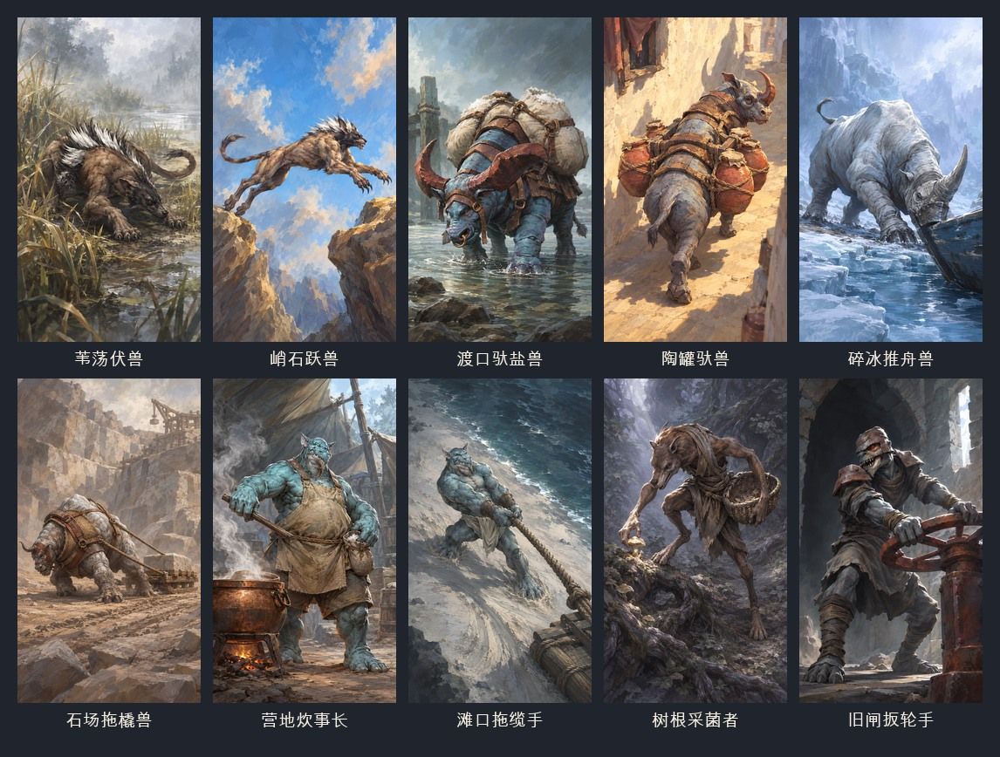

苇荡伏兽

镜头略高位俯视，贴地伏身、头低尾弯
用光浓雾清晨柔光，水面一点灰白反射
主色煤褐毛、米白长鬃、浅苇黄
生成描述
为yf-artifact绘制Dota官方漫画配角与生物题材普通单位，工作名「苇荡伏兽」。一头普通长鬃四足巡猎兽，保留参考的黑额、白色硬鬃、粗壮前腿和长尾，体型略扁长。它伏在断苇和浅泥之间，前爪张开，胸腹贴近地面，耳朵压低，头向右侧缓转。尾巴沿身后弯成低弧，露出鼻尖、四足和尾端。焦点是探出苇丛的深色脸、指爪与竖起的短白鬃，背景是明亮灰雾里的平缓水线。
已完成 10 张，Migoo Flare，768×1360。参考来自《Are We Heroes Yet?》和《最后的城堡》。每张按角色参考、成图和48像素小卡对照，点图可打开原图。

镜头略高位俯视，贴地伏身、头低尾弯
用光浓雾清晨柔光，水面一点灰白反射
主色煤褐毛、米白长鬃、浅苇黄
为yf-artifact绘制Dota官方漫画配角与生物题材普通单位，工作名「苇荡伏兽」。一头普通长鬃四足巡猎兽，保留参考的黑额、白色硬鬃、粗壮前腿和长尾，体型略扁长。它伏在断苇和浅泥之间，前爪张开，胸腹贴近地面，耳朵压低，头向右侧缓转。尾巴沿身后弯成低弧，露出鼻尖、四足和尾端。焦点是探出苇丛的深色脸、指爪与竖起的短白鬃，背景是明亮灰雾里的平缓水线。
镜头低位完整侧视，后腿蹬离石面、身体腾起
用光午后清亮侧光，岩下冷阴影
主色灰褐皮毛、冷蓝天空、淡赭岩
为yf-artifact绘制Dota官方漫画配角与生物题材普通单位，工作名「峭石跃兽」。一头来自参考长鬃兽群的轻型四足兽，头窄、黑额、颈背短白鬃、四肢较长、尾细长。它从左侧矮岩向右侧岩沿跃出，前爪伸向落点，后腿刚蹬离石面，身体像伸展的弓，四爪与尾端均完整。低机位从侧面看跃起瞬间，冷蓝天空占上半幅，淡赭色斜岩只作下方两个落点。细节集中在紧绷的肩部、脚爪和被风分开的鬃尖。
镜头水面高度前三分之四，低头缓步涉水
用光清晨侧面冷天光，水面柔亮，腹下暗
主色青蓝皮、盐白货袋、灰绿潮水
为yf-artifact绘制Dota官方漫画配角与生物题材普通单位，工作名「渡口驮盐兽」。一头漫画商队同类的普通长角驮兽，保留青蓝粗皮、深红宽角、短粗四足和钝口吻，头两侧挂朴素皮带。它背两只绑紧的盐白粗布货袋，涉过仅到脚踝的渡口浅水，右前足刚踏出水花，鼻子低垂试探石头。前侧低机位，长角、两侧袋子、四足、尾端完整。画面用货袋的两个浅色大块与青蓝身体对照，远处一段灰绿木桩与平水线，焦点在袋口盐晶、鼻环扣与前足水圈。
镜头高位后侧斜看，回头、转弯挤过白墙
用光正午硬日光，墙上大块干净投影
主色砖红陶罐、灰蓝皮、米白墙
为yf-artifact绘制Dota官方漫画配角与生物题材普通单位，工作名「陶罐驮兽」。一头低阶商旅使用的长角驮兽，青灰粗皮、钝鼻、向前弯的红褐角和短粗四腿，沿参考的动物结构。它背着一个低木架，左右各悬两只圆腹砖红陶罐，正在窄巷转弯，头回望右后方，身体弯出缓弧。相机从后上方看完整全身，前后脚错开，罐子之间有空隙，角与尾端完整。米白墙面接住正午硬光和清楚的角影，地面浅米黄，局部细节只放在陶罐口布塞、捆绳和皮肩垫。
镜头近地三分之四正面，低头顶住船艏
用光阴雪天冷柔光，冰面反亮，护鼻片少量银光
主色霜白厚皮、冰青水面、暗蓝旧舟
为yf-artifact绘制Dota官方漫画配角与生物题材普通单位，工作名「碎冰推舟兽」。一头参考中灰白厚皮、长鼻角、宽背和短壮四足的普通驯养兽，戴朴素旧铁护鼻片，角根缠灰布。它在结薄冰的浅岸低下头，用护鼻片抵住一艘窄旧木舟的船艏，把船推离冰边，前腿一前一后弯曲发力。相机贴地从前侧看，全身略偏左，舟艏只占右下角，四足与背部完整。白皮和冰青水面形成宽亮面，腹下与舟底为沉暗蓝块，细节落在鼻片擦痕、断冰边和前脚冻泥。
镜头眼平侧后视，肩背向前压、拉紧双绳
用光阴天漫射光，背部宽亮，地面投影柔短
主色尘灰厚皮、暖灰石场、旧木棕
为yf-artifact绘制Dota官方漫画配角与生物题材普通单位，工作名「石场拖橇兽」。一头粗壮的灰白驮运兽，沿参考的低头长角、宽背和短粗四足结构，皮肤有尘灰粉末，胸前是厚麻布垫与宽皮挽具。它侧身向左下方缓慢牵引一只低木橇，橇上只放一块平整切石，双绳绷直并在它后方留出三角空隙。侧后眼平镜头，全身、角尖、四足和橇都在画内，主要形体是斜压的肩背和低平的拖橇。背景用浅暖灰采石壁和几块方石做大色块，重点刻画受力挽具、木橇拖痕和厚足。
镜头略仰平视，宽腹侧转、单臂长勺横伸
用光棚外冷天光与锅下小块暖火光，手脸清楚
主色蓝绿皮、铜褐锅、灰白蒸汽
为yf-artifact绘制Dota官方漫画配角与生物题材普通单位，工作名「营地炊事长」。一个漫画营地异族的普通炊事长，青蓝皮肤、短耳、宽口獠牙、大腹和粗壮四肢，保持参考的宽厚比例。穿粗麻围裙和短布裤，双脚踏稳，一手握一柄长木勺横向搅动低矮圆锅，另一手扶住腰间盐包。锅在人物侧前方，仅到膝高，让完整躯干、双腿和头都清楚；长勺与身体形成宽T形轮廓。营棚外冷白天光照脸与肩，锅下只有一小块炭火暖光，灰白蒸汽向左上散开。精细处集中在木勺握持、卷围裙边与鼻侧汗珠。
镜头高位斜俯，宽步后仰、双臂向前拉绳
用光薄暮均匀冷光，水线窄亮，身后长软影
主色青灰皮、深靛水、浅砂白
为yf-artifact绘制Dota官方漫画配角与生物题材普通单位，工作名「滩口拖缆手」。一名漫画营地同族的普通非人拖缆手，青灰皮肤、宽嘴、厚下颌、大手和结实短腿，比参考略收窄腹部。只穿灰白腰布和旧皮护掌，它站在白砂斜岸，双脚一前一后深陷湿砂，后仰身体，双手抓住一条绷紧向画面右下延伸的粗缆，缆端在画内连到一个小木拖浮台。上方斜俯视看清宽步与弯腰，脸、双手、双脚和绳结完整。深靛色河水占上侧，砂岸浅白，薄暮冷光柔和，重点是指缝、粗绳、脚下扇形滑痕。
镜头侧上方俯看，长腿跨根、长臂低垂采摘
用光林下柔光，一束窄白日光照指尖与菌盖
主色褐毛、米黄菌盖、冷紫苔影
为yf-artifact绘制Dota官方漫画配角与生物题材普通单位，工作名「树根采菌者」。一个参考中的瘦长营地生物，长兽形口吻、褐色短毛、弯曲长腿和下垂长臂，面部与体态保持非人特征。腰缠简单旧布，一脚踩在拱起树根上，一脚留在地面，躯干弯向右下，一只长手轻捏一朵米黄色菌，另一臂挎一只扁椭圆藤筐。侧上方镜头，让长腿、弯背与垂手形成不规则拱形，头与脚完整。背景是冷紫灰苔影，窄白日光只落在指尖、菌盖和筐沿，细节集中在粗指节、菌褶与断藤。
镜头低位三分之四侧视，扭身压下一只阀轮
用光狭窗右侧冷白光，门洞沉暗，手和獠牙有短亮边
主色灰蓝皮、铁锈红、浅冷石壁
为yf-artifact绘制Dota官方漫画配角与生物题材普通单位，工作名「旧闸扳轮手」。一名漫画里的普通獠牙门卫同族，灰蓝皮肤、突出獠牙、窄额和旧包颊铁盔，长脸有明确非人嘴形。穿灰布短甲衣和简单绑腿，肩上仅两片旧铁。它站在窄石闸门旁，双手压住一只腰高的锈红圆形扳轮，扭身向左发力，前膝弯曲、后脚蹬住地面。低位三分之四侧视，完整头、双脚与轮沿，阀轮只到腰侧并与脸错开。右侧狭窗冷白光照手背、獠牙和铁轮上缘，门洞在身后形成干净深暗块，细节集中在轮轴锈粉和粗布袖口。